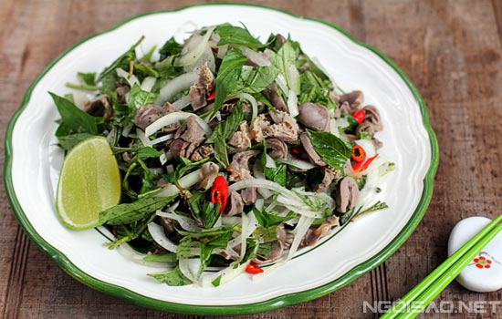

Cùng bắt tay làm thử thôi nào!
- 1/2 vỉ tim gà
- 1/2 vỉ mề gà.
- 1 bó rau răm, 1/2 củ hành tây.
- Nước trộn gỏi: làm theo tỷ lệ 1 chanh + 1 muối + 1 đường + ít tiêu.
Cách làm:
- Tim, mề gà ngâm rượu trắng, muối cho sạch hết chất bẩn trong khoảng 5 - 10 phút. Sau đó chà sạch mề gà với chanh cho thơm rồi rửa lại bằng nước sạch.
- Đun nước sôi, thêm ít muối rồi cho lòng vào. Khi nước sôi lại thì vớt lòng ra rửa lại với nước sạch.
- Đun sôi nồi nước khác rồi cho lòng vào luộc chín với ít muối. Lòng chín vớt ra để ráo. Mề gà thái lát mỏng, tim bổ đôi.
Bước 2:- Rau răm rửa sạch, để ráo nước.
Bước 3:- Hành tây thái lát mỏng, ngâm nước muối cho bớt hăng.
Bước 4:- Trộn các loại gia vị theo tỷ lệ để làm nước trộn gỏi.
Bước 5:- Khi chuẩn bị ăn thì cho lòng ra tô, trộn trước lòng với nước trộn gỏi cho thấm. Trộn từ từ khi nêm lại thấy vừa ăn là được.
- Cho hành tây, rau răm vào trộn đều rồi cho ra dĩa dùng liền, thêm một ít ớt thái lát nếu thích ăn cay.